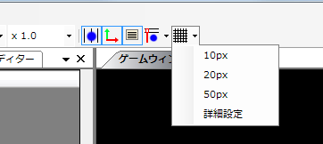
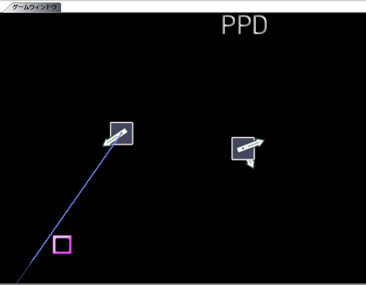

Hasta ahora solo ha colocado las marcas. Ahora configure su posición, ángulo y tipo.
Primero, cómo posicionar las marcas.
Para posicionarlas de forma intuitiva, seleccione una marca y arrástrela en la ventana de juego.

Si quiere limitar dónde se pueden colocar las marcas, puede usar la cuadrícula.
Mientras se muestra la cuadrícula, con el ratón solo se pueden colocar en sus intersecciones. (Se activa con el botón de cuadrícula)

Para ajustar con precisión la posición, use las teclas de flecha. (1px normalmente, 10px con Shift, 5px con Control. Se puede cambiar en la configuración)
Para copiar la posición de la marca anterior del mismo tipo, pulse Ctrl+Q.
También puede simplificar el posicionamiento con el cargador/guardador de posición y ángulo o el creador de geometría, pero aquí se omiten por ser una guía para principiantes.
Ahora, el ángulo de las marcas.
Tras seleccionar una marca, arrastre en cualquier parte de la ventana de juego que no sea la marca para fijar el ángulo.
Manteniendo Shift, el ángulo se limita a múltiplos de cierto ángulo. (10 grados por defecto. Se puede cambiar en la configuración)

Para copiar el ángulo de la marca anterior del mismo tipo, pulse Ctrl+R.
Igualmente, puede simplificarlo con el cargador/guardador de posición y ángulo o el creador de geometría, pero aquí se omiten por ser una guía para principiantes.
Ahora, el tipo de las marcas.
Como ya se explicó, el tipo depende de la posición vertical donde se coloca la marca.
Para cambiar el tipo de una marca colocada, arrástrela manteniendo Shift y suéltela en la posición vertical del tipo que desee.
Arrastrar y soltar manteniendo Ctrl copia la marca.
También puede seleccionar un rango y copiarlo con Ctrl+C; al colocar una marca, la copia se pega en esa posición. (No olvide vaciar el búfer de copia con Ctrl+Shift+C)
Ahora, cómo crear marcas largas (o HOLD).
Coloque una marca en el inicio de la marca larga (inicio del HOLD).
Luego coloque una marca en el final (en el caso de HOLD, antes de la siguiente marca del mismo tipo) y seleccione ambas con una selección de rango.
Pulse Ctrl+F para convertirlas en una marca larga (HOLD).
Con una marca larga seleccionada, pulse Ctrl+Shift+F para separarla.

Con esto termina la configuración de las marcas.
Siguiente